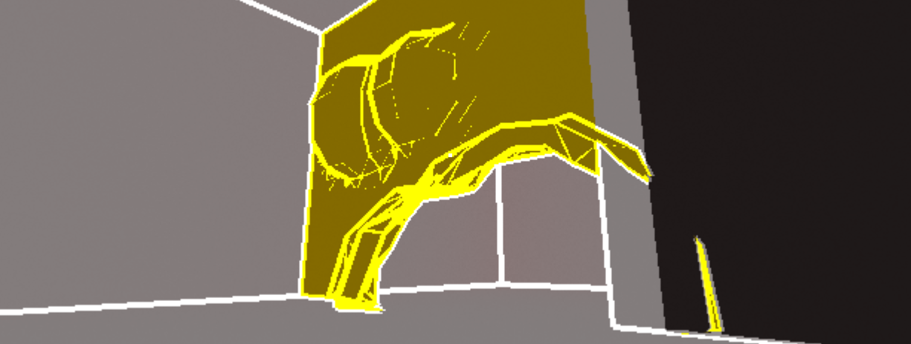

[Itch Page] UE5 | Solo | 2024 | A time-trial 3D platformer with a unique mix of visuals and obstacles.
Though the player has intrinsic abilities like a grapple hook and wall-run, movement in this game is heavily dependent on environment. To introduce destructibility, I designed a procedural mesh which could dynamically deform and erase in response to explosive force.

Outside the dim and rusty home base, levels in this game take advantage of multiple post-processing effects to efficiently convey info, as necessitated by high-speed platforming. A custom edge detection algorithm allows objects to appear outlined; this is combined with custom depth stencilling, by which subgroups of world objects share colours and rendering properties.
Pause screens in levels either utilize a luminosity based pixelation or a custom cell shading algorithm, with the home base level otherwise using a custom film grain material.